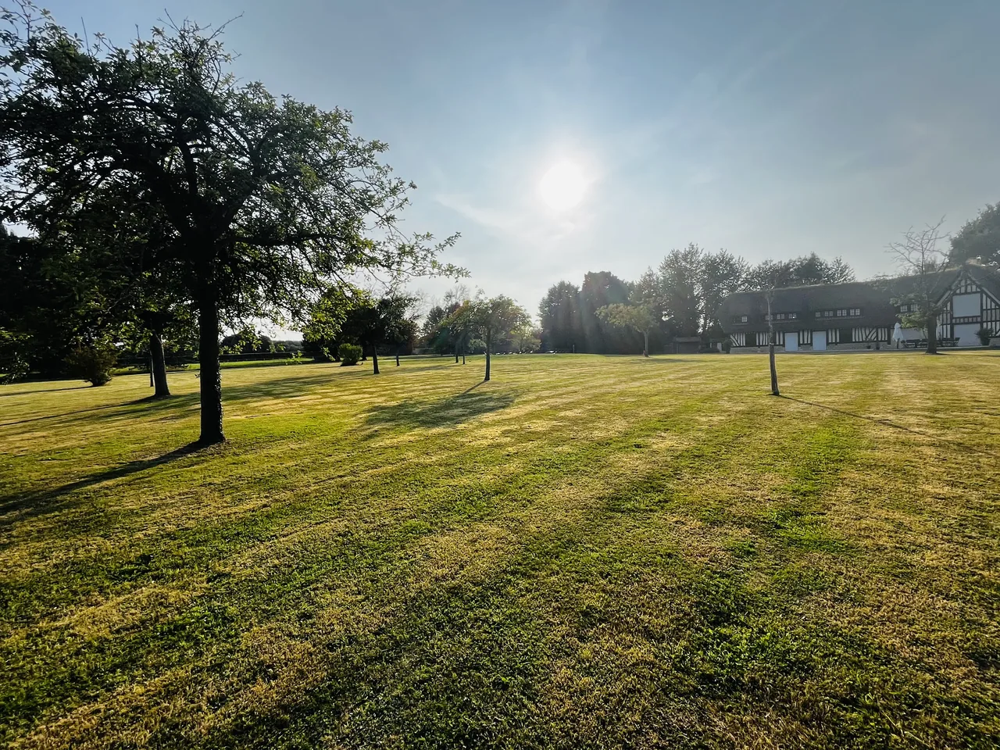
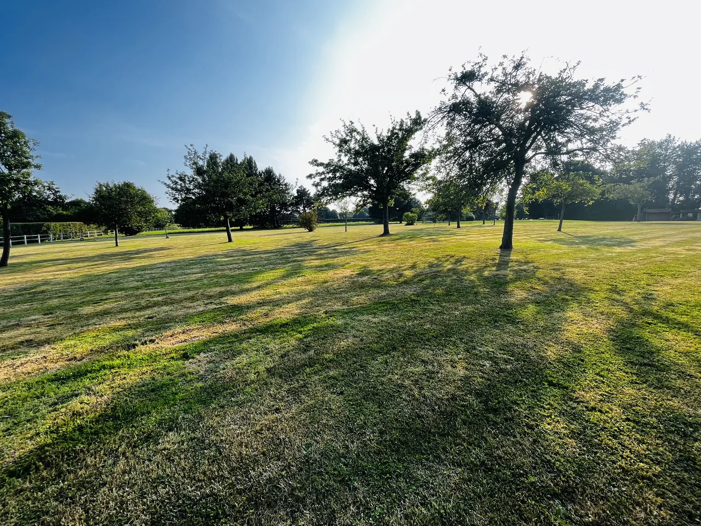
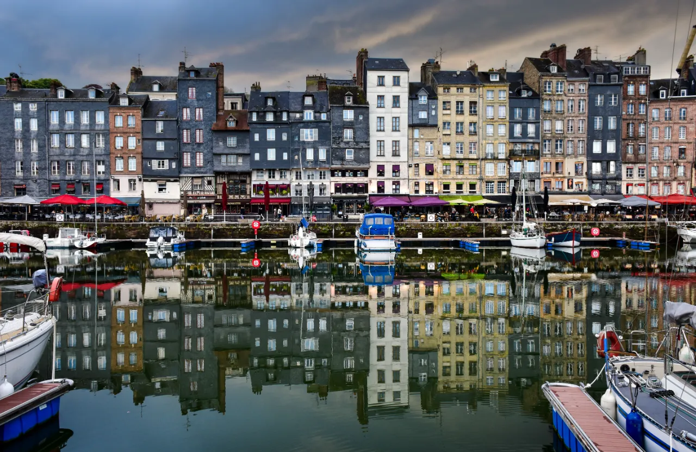
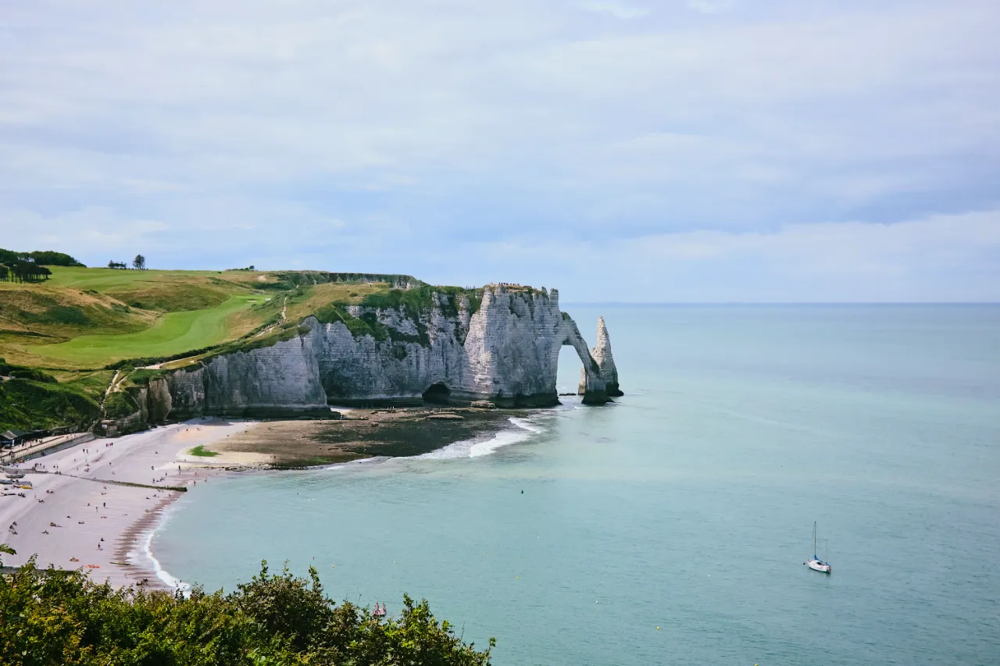

Environ 5 km
Environ 5 kmDeauville
Les Planches, le Casino Barrière, la plage, les hippodromes et les golfs. Boutiques et belles tables, en saison comme hors saison.

Le domaine n’est pas seulement près de Deauville : il est niché au cœur du Pays d’Auge, entre deux haras, au milieu des prés et des vergers.
Il suffit de quitter la route principale pour retrouver les chemins creux, les maisons à colombages et les fermes cidricoles qui font l’identité de cette Normandie de l’intérieur.


Le domaine est entouré de deux haras. Le Pays d’Auge est l’une des grandes terres d’élevage du cheval en France.
Prés bordés de haies, pommiers et vaches normandes : un paysage de bocage à parcourir à pied ou à vélo.
Beuvron-en-Auge, Beaumont-en-Auge, Pont-l’Évêque : colombages, halles et églises de pierre.
Vallées douces, points de vue sur la mer et lumières changeantes, de la côte Fleurie aux collines.
Pont-l’Évêque, livarot, camembert, cidre et calvados, à découvrir sur les marchés et chez les producteurs.
La route du cidre et les départementales qui serpentent entre fermes et manoirs.
Distances indicatives depuis la maison, par la route.
Environ 5 kmLes Planches, le Casino Barrière, la plage, les hippodromes et les golfs. Boutiques et belles tables, en saison comme hors saison.
 Environ 6 km
Environ 6 kmPassé le pont des Belges : le port de pêche, la criée, la longue plage et les villas balnéaires.

Environ 20 kmLe Vieux Bassin, l’église Sainte-Catherine en bois, les galeries d’art et les ruelles pavées.

Environ 75 kmPar le pont de Normandie : les falaises, les arches et les sentiers du littoral.
 Environ 50 km
Environ 50 kmLe Mémorial de Caen, puis les plages et les sites de mémoire de 1944, pour une journée marquante.